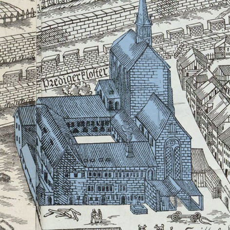
Zentralbibliothek
Burgunderkriege
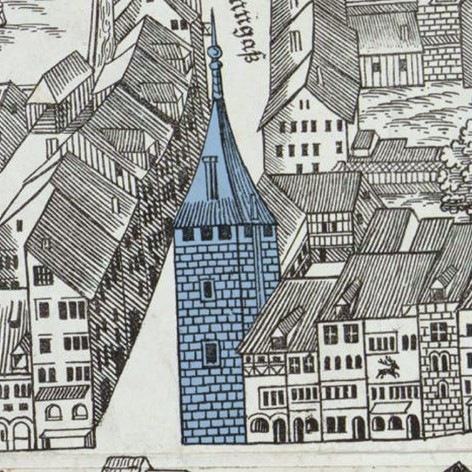
Göldli-Turm
Waldmanns Gegner
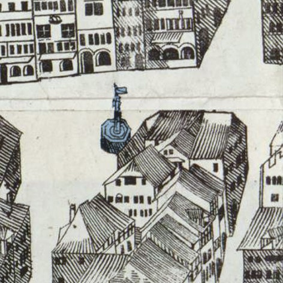
Stüssihofstatt
Zürich und die Eidgenossenschaft
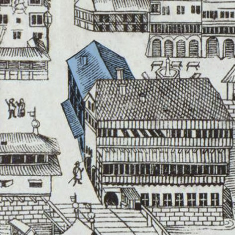
Haus zum ‹Schneggen›
Waldmanns Machtzirkel
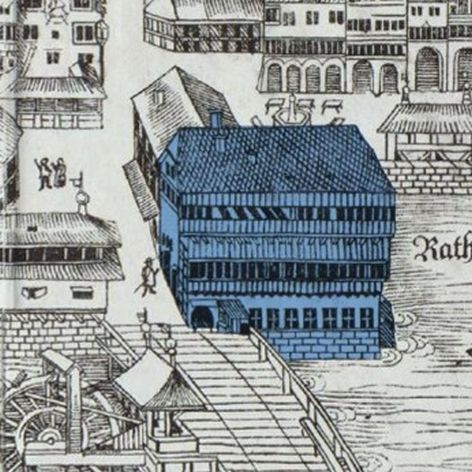
Rathaus
Herrschaft – Stadt und Land
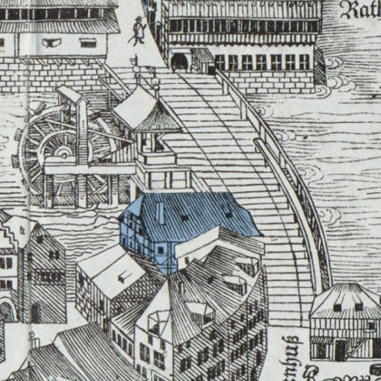
Rathausbrücke / Gasthof ‹zum Schwert›
Aufstand und Sturz

Haus ‹zur Mugg›
Familie und Wohnstätten I
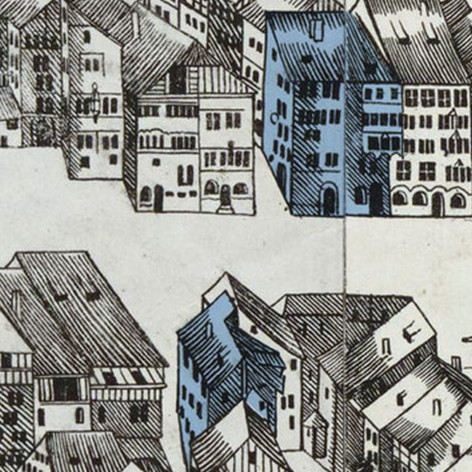
Häuser ‹zum Roten Mann› und ‹zum Mond›
Familie und Wohnstätten II
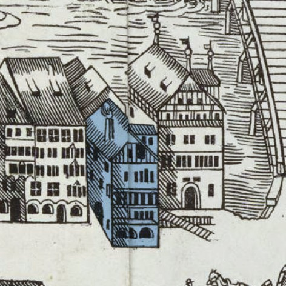
Altes Zunfthaus ‹zur Kämbel›
Waldmanns Aufstieg
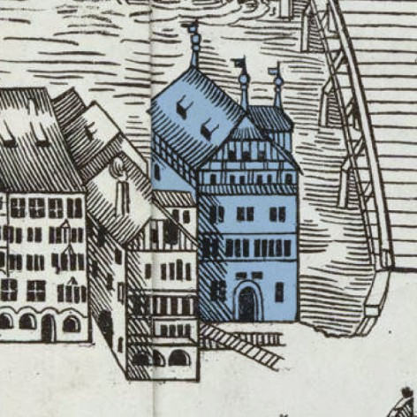
Einsiedler Amtshaus
Waldmanns Einkünfte
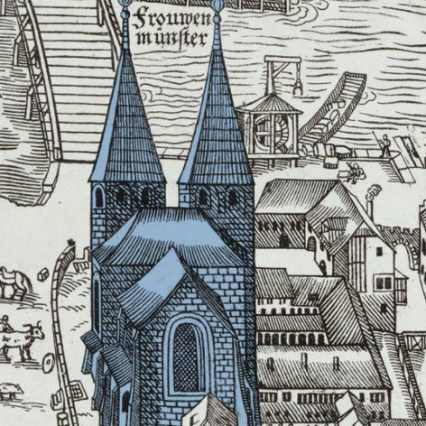
Fraumünster I
Votivbild
Fraumünster II
Waldmanns Grab

Waldmann-Denkmal
Erinnerungskultur
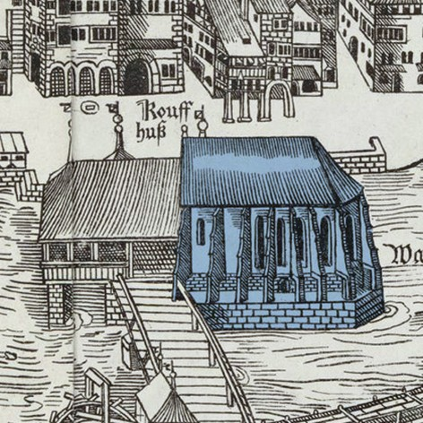
Wasserkirche
Sittenmandate
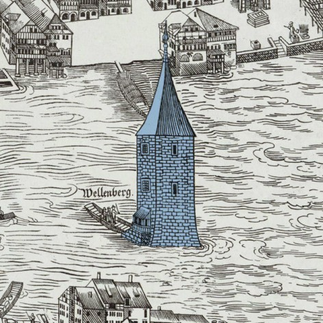
Wellenberg / Schifflände
Prozess und Urteil
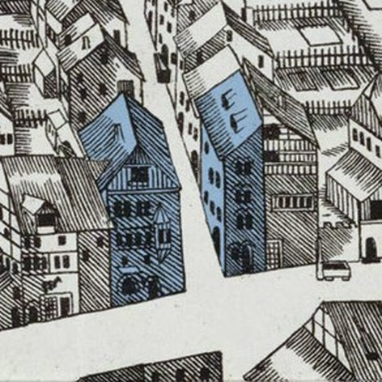
Haus ‹zum Sitkust›
Versteckte Söldner?
Haus ‹zum Steinernen Erggel›
Waldmanns Chronist
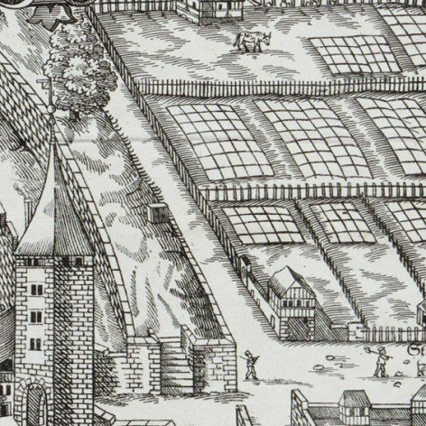
Waldmannstrasse / Hohe Promenade
Richtstätte